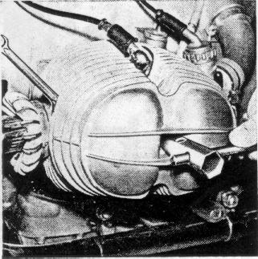
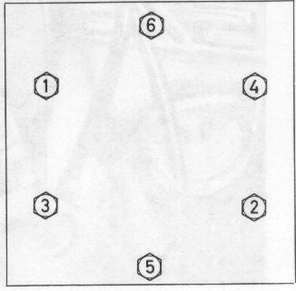
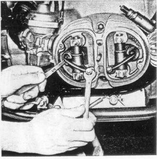

Check the torque of the nuts of the four cylinder head nuts and
the two cylinder head nuts every 3000 miles.
First remove the hex nut (wrench size 14) as well as both
lateral nuts (wrench size 10) and remove rocker arm cover.
Figure 49
49

If necessary, retighten cylinder head nuts and nuts as shown
on diagram with torque wrench (25 + 2.8 lb/ft).
Figure 50
50

Check valve clearance --
required after each retightening of the cylinder head nuts --
with feeler gage between valve stem and rocker arm when
engine is stopped and cold.
To do this, unscrew spark plugs and turn engine over with
allen wrench (wrench size 6) at the alternator rotor bolt
until the cylinder to be adjusted is at
compression
top dead center. Both valves are closed.
If necessary, readjust clearance (wrench size 12) after
loosening the lock nut (wrench size 12), secure with lock nut,
recheck valve clearance.
Figure 51
51
